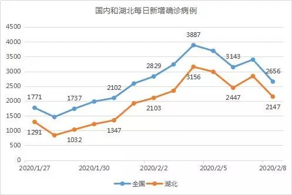
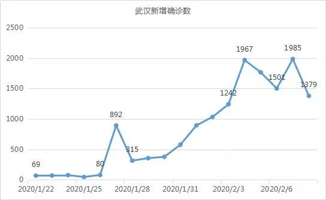
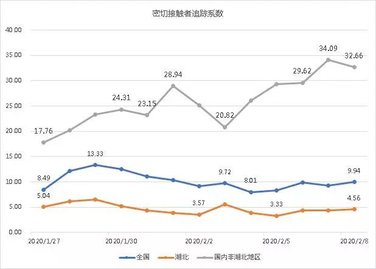
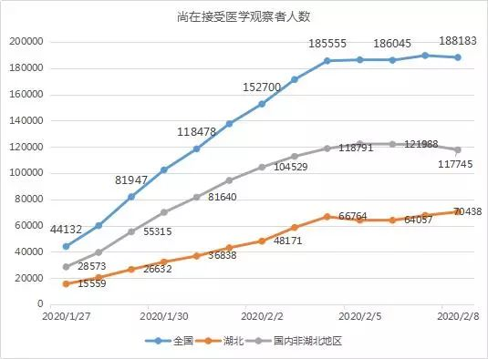
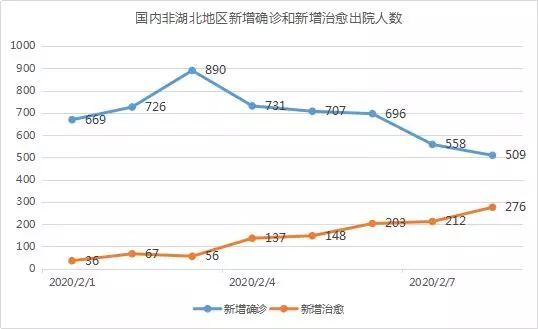

数说疫情0208：武汉数据反弹，治愈远超病死
原文链接 备份链接 图/法新 文 | 《财经》数据研究员 徐进 编辑 | 谢丽容 首先谢谢网友鼓励、拍砖。 1、 今日概况： 国家卫健委：截至2月7日24时，31个省（自治区、直辖市）和新疆生产建设兵团累计报告，现有确诊病例31774 …

文 |《财经》数据研究员 徐进
编辑 | 谢丽容
元宵节过完了，再下来是“龙抬头”。
1、 今日概况
2月8日0—24时，31个省（自治区、直辖市）和新疆生产建设兵团报告，新增确诊病例2656例（湖北2147例），新增重症病例87例（湖北52例），新增死亡病例89例（湖北81例，河南2例，河北、黑龙江、安徽、山东、湖南、广西各1例），新增疑似病例3916例（湖北2067例）。
2、 洪峰正在通过，头部已经清晰
追踪疫情数据以来，小编今天的心情终于不那么沉重了。非湖北地区新增病例继续下降，头部和右肩已然清晰明朗。

湖北数据则走出双头形态，接下来有望确认右肩。

武汉数据今天给出了惊喜。鉴于中央赴湖北指导组和湖北省领导近两日一再强调尽快实现“应收尽收、一个不漏”，我们可以推测武汉及周边城市“堰塞湖”正在得到化解。洪峰主体很可能已于2月7日通过。武汉数据也因此有望走出双头形态。

湖北新增在院治疗人数2月7日跳升随即于8日回落亦可印证此点。

另一件值得高兴的事是湖北卫健委网站开始发布疑似病例存量：”现有疑似病例23638人，其中集中隔离12928人。当日排除1128人。”
寥寥数语，信息量很大。不少网友曾问我们为何不分析疑似病例，其实主要是因为看不到湖北疑似病例的存量数据，小编难为无米之炊。
现在我们终于清楚了全国疑似病例存量（待排查量）中有多少在湖北。至于湖北卫健委网站为何一直没有发布这一重要疫情信息，小编不愿妄测。但现在发布，足以让我们感受到信心和勇气！也让我们在接下来的疫情期可以掌握更多信息。
3、确诊病例增长率预计10-15天后归零

湖北增长率一举下降到10%以下令人鼓舞。非湖北地区增长率进一步下探。我们对非湖北数据进行分段拟合，同时参照2003年SARS的数据形态，推测出其增长率降为零的时点应该在2月19日-21日。同样，我们推测如果没有大的意外，湖北实现零增长的大概率时点应该在2月20日-2月25日。有网友指出分母增大会导致增长率过快下降的假象。谢谢！这个提醒很重要。增长率是重要分析指标，其特点就是将分子分母的信息同时涵盖。导致增长率过快下降假象的情况一般在分子变动相对分母过大时（如疫情早期）比较明显。随着疫情发展，分母变大，分子变小，这个影响就趋于弱化。但是在对增长率进行线性拟合时对此偏差必须注意校正。因此做数据拟合时我们没有采用早期数据。同时我们采用分段的方式降低其影响。
4、待排查疑似病例存量补上湖北

今天我们补上湖北的这个点，同时也补上非湖北的。
5、密切接触者追踪力度和存量

注：密切接触者追踪系数=每日追踪的密切接触者增量/每日新增确诊病例数
可以看到湖北对密切接触者追踪力度近几日有所提升。平均每个病例追踪的密切接触者由3.3人左右上升到4.6人。鉴于湖北新增病例依然很多，能做到这一点实属不易。

尚在接受医学观察人数方面，今天的亮点是非湖北地区出现显著下降。另一方面湖北略有增长，再次印证隔离、检测、收治能力提升。
6、非湖北地区新增治愈人数接近新增确诊人数
随着疫情进展，治愈人数远超病死人数已无悬念。今天起我们将新增治愈人数纳入视野。图9可以看到非湖北地区日趋下降的新增确诊病例与逐渐上升的新增治愈人数正相向而行。让我们共同期待第一个“黄金交叉”的到来！



湖北非湖北病死率均有微弱回升。
小结：武汉“堰塞湖”化解关乎“抗疫”全局。此战结束，大局即可反转。我们期待接下来几天的数据确认。虽说此时恐怕言“顶”尚早，小编已按捺不住要在明天尝试描述一下“顶”的形态。同胞们，再接再厉！

▲点击图片查看更多疫情报道
责编 | 黄端 duanhuang@caijing.com.cn
本文为《财经》杂志原创文章，未经授权不得转载或建立镜像。如需转载，请在文末留言申请并获取授权。
原文链接 备份链接 图/法新 文 | 《财经》数据研究员 徐进 编辑 | 谢丽容 首先谢谢网友鼓励、拍砖。 1、 今日概况： 国家卫健委：截至2月7日24时，31个省（自治区、直辖市）和新疆生产建设兵团累计报告，现有确诊病例31774 …
原文链接 备份链接 图/法新 文 | 徐进 1、 今日概况： 根据国家卫健委消息，截至2月6日24时，31个省（自治区、直辖市）和新疆生产建设兵团累计报告确诊病例31161例，累计治愈出院1540例，现有确诊病例28985例（其中重症病 …
原文链接 备份链接 制图 |《财经》视觉中心 根据国家卫健委消息，截至2月6日24时，31个省（自治区、直辖市）和新疆生产建设兵团累计报告确诊病例31161例，累计治愈出院1540例，现有确诊病例28985例（其中重症病例4821例）， …
原文链接 备份链接 【财新网】（记者 丁捷 马丹萌）武汉“封城”多日，全国各省市输入性病例已过潜伏期14天。随着湖北以外各地第一批输入性病例潜伏期即将过去，新冠肺炎防控陆续进入本地散发的“第二阶段”。疫情拐点尚未明确，全国大多数地区严防 …
原文链接 备份链接 图/法新 文 | 徐进 是的！好转迹象就藏在数据更新中。据国家和湖北省卫健委公布的数据，截止到2月5日24时，有关数据分析如下： 1、新增确诊病例数由陡增转为下降 其中湖北新增确诊病例数结束连续一周的“步步高”由升转降 …